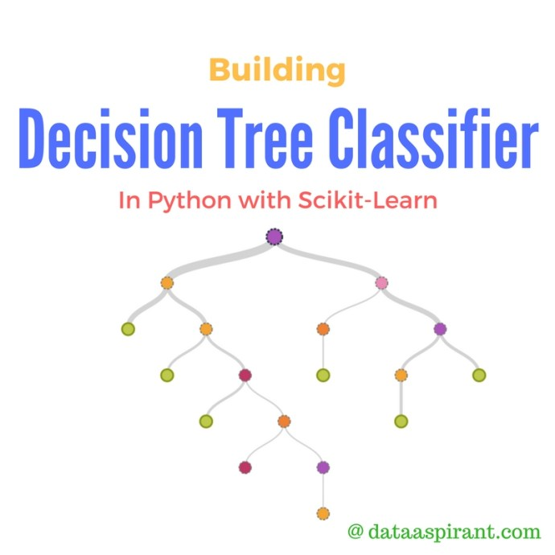

Decision Tree (Pohon Keputusan)¶

Pengertian¶
Decision tree atau pohon keputusan adalah alat pendukung keputusan yang menggunakan model keputusan yang berbentuk seperti pohon. Decision tree memetakan berbagai alternatif yang mungkin untuk mengatasi suatu masalah, dan terdapat juga faktor-faktor kemungkinan yang dapat mempengaruhi alternatif tersebut beserta estimasi akhirnya jika memilih alternatif yang ada. Decision tree merupakan salah satu metode yang bisa digunaan untuk menampilkan algoritma dimana hanya berisi pernyataan kontrol bersyarat.
Penggunaan Decision tree ini umunya dalam riset operasi, khususnya dalam analisis keputusan. Tujuan dalam menggunakan Decision tree untuk membantu mengidentifikasi strategi yang paling mungkin untuk mencapai tujuan dan merupakan alat yang populer dalam machine learning.
Decision tree merupakan struktur seperti bagan alur dimana setiap simpul internal mewakili kemungkinan yang ada pada atribut, setiap cabang mewakili hasil dari kemungkinan tersebut, dan setiap simpul daun mewakili label kelas (keputusan diambil setelah menghitung semua atribut). Jalur dari root ke daun mewakili aturan klasifikasi.
Dalam analisis keputusan, decision tree dan diagram yang terkait dengan itu digunakan sebagai alat pendukung keputusan visual dan analitis, dimana akan dihitungnya nilai atau utilitas yang diharapkan dari alternatif yang ada.
-
Decision tree terdiri dari tiga jenis simpul:
-
Simpul keputusan - biasanya diwakili oleh kotak
- Simpul peluang - biasanya diwakili oleh lingkaran
- Simpul akhir - biasanya diwakili oleh segitiga
Decision tree biasanya digunakan dalam riset operasi dan manajemen operasi. Jika, dalam praktiknya, keputusan harus diambil secara online tanpa penarikan kembali di bawah pengetahuan yang tidak lengkap, sebagai model pilihan terbaik atau algoritma model seleksi online decision tree harus diparalelkan dengan model probabilitas. Penggunaan lain dari decision ini yaitu sebagai alat deskriptif untuk menghitung probabilitas bersyarat.
Dimulai dari kiri ke kanan, decision tree hanya memiliki simpul burst (jalur pemisahan) dan tidak ada simpul sink (jalur konvergen). Oleh karena itu, jika digunakan secara manual, decision tree dapat berkembang jadi sangat besar dan sulit untuk menggambar semuanya dengan tangan.
Decision Tree dapat dilinearisasi menjadi aturan keputusan, dimana hasilnya adalah isi dari simpul daun, dan kondisi di sepanjang jalur membentuk konjungsi dalam klausa if. Secara umum, bentuk aturannya seperti:
Jika kondisi1 dan kondisi2 dan kondisi3, maka hasil.
Aturan keputusan dapat dihasilkan dengan membuat aturan asosiasi dengan variabel target di sebelah kanan.
Decision tree juga dapat dilihat sebagai model generatif aturan induksi dari data empiris. Decision tree optimal kemudian didefinisikan sebagai pohon yang menyumbang sebagian besar data, sambil meminimalkan jumlah level atau "pertanyaan". Beberapa algoritma untuk menghasilkan pohon optimal tersebut telah dirancang, seperti ID3 / ⅘, CLS, ASSISTANT, dan CART.
Di antara alat pendukung keputusan lainnya, decision tree memiliki beberapa keunggulan, yaitu:
- Mudah dimengerti dan dipahami. Orang-orang bisa memahami model decision tree dengan penjelasan singkat.
- Memiliki nilai walaupun dengan sedikit data yang rumit. Wawasan penting dapat dihasilkan berdasarkan para ahli yang menggambarkan situasi dan preferensi mereka untuk hasil.
- Membantu menentukan nilai terburuk, terbaik, dan nilai yang diharapkan untuk berbagai skenario.
- Menggunakan model kotak putih jika hasil diberikan oleh model.
- Dapat dikombinasikan dengan teknik pengambilan keputusan lainnya.
Decision tree juga memiliki kekurangan, seperti:
- Tidak stabil, yang berarti bahwa perubahan kecil dalam data dapat menyebabkan perubahan besar dalam struktur decision tree optimal.
- Relatif tidak akurat. Banyak prediktor lain memiliki kinerja yang lebih baik dengan data serupa. Hal ini dapat diatasi dengan mengganti decision tree tunggal dengan forest of decision tree acak. Namun hutan yang acak tidak semudah memahami decision tree tunggal.
- Untuk data yang termasuk variabel kategorikal dengan jumlah level yang berbeda, perolehan informasi dalam decision tree cenderung mendukung atribut dengan level yang lebih banyak.
- Perhitungan bisa menjadi sangat kompleks, terutama jika banyak nilai tidak pasti dan / atau jika banyak hasil dikaitkan.
Kelebihan dan Kekurangan Decision Tree¶
Kelebihan:¶
- Mudah dimengerti dan dipahami. Orang-orang bisa memahami model decision tree dengan penjelasan singkat.
- Memiliki nilai walaupun dengan sedikit data yang rumit. Wawasan penting dapat dihasilkan berdasarkan para ahli yang menggambarkan situasi dan preferensi mereka untuk hasil.
- Membantu menentukan nilai terburuk, terbaik, dan nilai yang diharapkan untuk berbagai skenario.
- Menggunakan model kotak putih jika hasil diberikan oleh model.
- Dapat dikombinasikan dengan teknik pengambilan keputusan lainnya.
Kekurangan:¶
-
Tidak stabil, yang berarti bahwa perubahan kecil dalam data dapat menyebabkan perubahan besar dalam struktur decision tree optimal.
-
Relatif tidak akurat. Banyak prediktor lain memiliki kinerja yang lebih baik dengan data serupa. Hal ini dapat diatasi dengan mengganti decision tree tunggal dengan forest of decision tree acak. Namun hutan yang acak tidak semudah memahami decision tree tunggal.
-
Untuk data yang termasuk variabel kategorikal dengan jumlah level yang berbeda, perolehan informasi dalam decision tree cenderung mendukung atribut dengan level yang lebih banyak.
-
Perhitungan bisa menjadi sangat kompleks, terutama jika banyak nilai tidak pasti dan / atau jika banyak hasil dikaitkan.
Algoritma Decision Tree Classification¶¶
- ID3
- Gini Index
- Chi-Square
- Reduction in Variance
Namun disini kita hanya membahas ID3 dan Gini index saja.
Untuk mendapatkan nilai Information Gain dan Gain Ratio, terlebih dahulu kita harus menghitung nilai entropy. Eentropy digunakan untuk mengukur nilai ketidak murnian sekumpulan objek pada setiap cabang pada suatu atribut. Mila(2015) menyatakan rumus Entropy terdapat pada persamaan :

Algoritma ID3 menggunakan entropi untuk menghitung homogenitas sampel. Jika sampel benar-benar homogen, entropinya nol dan jika sampel dibagi sama rata, maka entropinya satu.
Kami akan menggunakan implementasi yang disediakan oleh kerangka pembelajaran mesin python yang dikenal sebagai scikit-belajar untuk memahami Pohon Keputusan.
Implementasi dalam Python¶
import os import numpy as np import pandas as pd import numpy as np, pandas as pd import matplotlib.pyplot as plt from sklearn import tree, metrics
#### Langkah pertama # Impor data data = pd.read_csv('data/car_quality/car.data',names=['buying','maint','doors','persons','lug_boot','safety','class']) data.head()
Identifikasi target variabel¶
data['class'],class_names = pd.factorize(data['class'])
Identifikasi variabel prediktor dan encode variabel string apa pun ke kode integer yang setara¶
data['buying'],_ = pd.factorize(data['buying']) data['maint'],_ = pd.factorize(data['maint']) data['doors'],_ = pd.factorize(data['doors']) data['persons'],_ = pd.factorize(data['persons']) data['lug_boot'],_ = pd.factorize(data['lug_boot']) data['safety'],_ = pd.factorize(data['safety']) data.head()
Pilih fitur prediktsi dan variabel target¶
X = data.iloc[:,:-1] y = data.iloc[:,-1]
Train test split:¶
X_train, X_test, y_train, y_test = model_selection.train_test_split(X, y, test_size=0.3, random_state=0)
Training/model fitting¶
dtree = tree.DecisionTreeClassifier(criterion='entropy', max_depth=3, random_state=0) dtree.fit(X_train, y_train)
Studi parameter model:¶
# use the model to make predictions with the test data
y_pred = dtree.predict(X_test)
# how did our model perform?
count_misclassified = (y_test != y_pred).sum()
print('Misclassified samples: {}'.format(count_misclassified))
accuracy = metrics.accuracy_score(y_test, y_pred)
print('Accuracy: {:.2f}'.format(accuracy))
Visualization of the decision graph:¶
import graphviz
feature_names = X.columns
dot_data = tree.export_graphviz(dtree, out_file=None, filled=True, rounded=True,
feature_names=feature_names,
class_names=class_names)
graph = graphviz.Source(dot_data)
graph
Refrensi¶
https://garudacyber.co.id/artikel/1545-pengertian-dan-penerapan-decision-tree